Практичні курси · журнал «ДентАрт» 2019 №2
Системна реновація реставрованих зубів. Верхні зуби
SYSTEMIC RENOVATION OF RESTORED TEETH. MAXILLARY TEETH
Сергій Радлінський,Українська медична стоматологічна академія, клініка-студія «Аполлонія» (м. Полтава, Україна)
Адгезивна технологія реставрації на основі дентинних адгезивів дала нам можливість відновлення початкової анатомічної форми зубів у прямій техніці,1,2,9 а реставрація зубів, виконана системно, за певним алгоритмом, дозволяє услід за відновленням початкової анатомічної форми конкретних зубів відновити також і початкову оклюзію, прикус.3-8 Однак усі реставрації мають певний термін служби, і з часом, різним для кожного конкретного пацієнта, реставровані зуби вимагають заміни реставрованої частини з метою відновлення цілісності конструкції реставрованого зуба. Ця заміна названа нами реновацією, оскільки через 10 років ця заміна може бути повною, але зазвичай у конструкції реставрованого зуба замінюється лише зношена частина власне реставрації. У статті на основі клінічного прикладу із 13-річною історією описано техніку реновації реставрованих зубів, які були системно відновлені за 10 років до реновації у зв’язку з патологічним стиранням як причиною зміни анатомічної форми зубів і втрати прикусу.
Усі реставрації тимчасові, за винятком останніх...Іво Крейчі
Пряма реставрація зубів дозволяє робити щадне препарування зубних тканин, вона щадна щодо пульпи зуба, забезпечує надійне з’єднання реставраційних матеріалів із зубними тканинами і тривалий захист зубних тканин від деградації, дає можливість у конструкції реставрованого зуба створювати реставрації, близькі до природних зубів механічно і оптично. Однак пряма реставрація зубів вимагає від стоматолога гарних мануальних навичок, персонального досвіду, суворої технологічної дисципліни, правильно обладнаного робочого місця і регулярного моніторингу стану реставрованих зубів.
Усі ці чудові можливості для пацієнтів і стоматологів стали можливими з використанням у реставрації дентинних адгезивів, і це призвело до зміни парадигми класичної реставрації за Блеком на парадигму сучасної адгезивної реставрації.9
Зміна парадигми Блека на парадигму адгезивної реставрації
Впровадження у практичну стоматологію дентинних адгезивів у середині 1990-х1,9 мало наслідком глобальну зміну парадигми реставрації за Блеком на парадигму адгезивної реставрації.
Парадигма Блека, основи якої були запозичені зі столярної справи, передбачала з’єднання реставрації із зубними структурами за рахунок макроретенції, препарування агресивними борами для створення спеціальної форми порожнин з вертикальними стінками, наявність міцних зубних тканин по колу коронки (ферул), видалення усього розм’якшеного дентину і щільного дентину заради досягнення форми порожнини, видалення всієї емалі, позбавленої підтримки дентину, висічення фісур і сліпих ямок, планування реставрації з перекриванням горбиків, товщиною композиту на жувальній поверхні не менше 2 мм, відсутністю оклюзійних контактів по лінії з’єднання реставрації та емалі, об’ємом не більше 1/3 міжгорбикової відстані, і при цьому термін служби прямих реставрацій становив лише 2 роки... Тому ізольовані дефекти на ріжучих краях і горбиках, які ми виявляємо при стертості зубів, неможливо було усунути в прямій техніці, і клас VI за Блеком втратив своє значення у стоматологічній практиці, оскільки усунення стирання зубів, дефектів класу VI було рекомендоване лише в непрямій техніці вкладками і накладками.
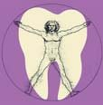
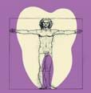
| Парадигма Блека | Парадигма адгезії | |
|---|---|---|
| Столярна справа | Базові принципи | Склеювання |
| Ящикоподібна, ферул, макроретенція | Конфігурація порожнини | Вільний дизайн, мікроретенція |
| Агресивні бори, зворотноконусні | Препарування порожнини | Фінішні бори, кулясті |
| Розм’якшений і твердий заради форми | Препарування дентину | Некротичний, збереження нативного |
| Уся емаль, позбавлена підтримки дентину | Препарування емалі | Збереження емалі, наскільки можливо |
| До 2 років | Термін служби | 10 років і більше |
Парадигма адгезивної реставрації ґрунтується на адгезивному мікроз’єднанні реставрації із зубними тканинами з використанням дентинного адгезиву, і поскільки в адгезивній техніці форма порожнини не має значення, з’явилося поняття щадного препарування, орієнтованого на дефект (вільний дизайн), з видаленням лише некротичного дентину і максимальним збереженням емалі (адгезивна реставрація композитом частково може замінити функцію еластичної підтримки емалі, за винятком в’язкої компоненти підтримки), включаючи герметизацію фісур і сліпих ямок шляхом інфільтрації. Якщо з’єднання реставрації із зубними тканинами становить величину, більшу критичної (17-20 МПа),1 то не мають значення товщина композиту на жувальній поверхні, товщина стінок відновлюваного зуба, локалізація оклюзійних контактів і обсяг відновлюваних тканин, а горбики можна зберегти за будь-якого їх ушкодження. Плановий термін служби реставрацій у конструкції реставрованого зуба встановлений на мінімальному рівні 10 років, і реальність цього терміну повністю підтверджується нашою власною практикою.
Завдяки зміні парадигми реставрації Блека на парадигму адгезивної реставрації з’явилася реальна можливість усунення у прямій техніці дефектів зубів, зумовлених патологічним стиранням. Межа між нормою і патологією у зношуванні/стиранні зубів визначається на рівні емалево-дентинного з’єднання: якщо розкритий дентин – це точно патологія, яка потребує лікарського втручання!
Принципи системного відновлення зубів
Наша концепція системного підходу до відновлення анатомічної форми зубів і прикусу за патологічного стирання заснована на робочому припущенні, що втрата вертикального розміру оклюзії і зміна прикусу відбуваються виключно за рахунок стирання зубних тканин і реставрацій. Якщо це справді так, то тоді просте відновлення анатомічної форми зубів з усуненням дефектів зубних тканин від патологічного стирання має повернути початкові вертикальний розмір оклюзії і прикус, відновити м’язовий баланс, повернути правильну позицію суглобових головок у суглобах і нормалізувати постуру. Просте відновлення анатомічної форми стертих зубів можливе у вільній техніці реставрації без попереднього моделювання (мок-ап/вокс-ап), покладаючись на збережені орієнтири форми коронок і топографії зубних тканин. Чим менша втрата зубних тканин, тим легше відтворити початкову форму коронок зубів, і критерієм переходу з функціонального зношування зубів у патологічну стертість є точкове оголення дентину на ріжучих краях і горбиках (дентин як внутрішня тканина завжди має бути покритий або емаллю, або цементом). Анатомічна нормалізація оклюзії через деякий час, наприклад протягом року, повинна проявитися у зникненні симптомів парафункцій. Наш 15-річний досвід системного відновлення зубів і прикусу підтверджує правильність цього підходу!
Системне відновлення зубів і прикусу виконується за принципом «все або нічого» за два етапи і 6 кроків з обов’язковим контрольним візитом для оцінки і уточнюючої корекції відновленої оклюзії.
На першому етапі за три кроки відновлюється анатомічна форма всіх верхніх зубів: спочатку відновлюються ікла як основа зубного ряду, потім бічні зуби, які задають вертикальний розмір прикусу, і на завершення відновлюються верхні різці. Оклюзійна поверхня нижніх бічних зубів служить орієнтиром оклюзійної кривої цього прикусу подібно до прикусного шаблону.
На другому етапі за три кроки відновлюються всі нижні зуби: спочатку відновлюється анатомічна форма бічних зубів з досягненням остаточного вертикального розміру прикусу (з урахуванням наступних фінішної обробки та інтеграції в оклюзії), потім іклів з відновленням бічних шляхів ведення, і на завершення відновлюються нижні різці, замикаючи прикус і формуючи передній шлях ведення.
Приблизно через місяць має бути контрольний візит для уточнення відновленої оклюзії, перевірки поверненого прикусу і досягнутого м’язового балансу.
| Діагностика (панорама, КТ, міографія, артикулятор). Захисна капа на нижні зуби (місяць) | |
| 1 | Відновлення анатомічної форми верхніх іклів |
|---|---|
| 2 | Відновлення форми верхніх молярів і премолярів |
| 3 | Відновлення анатомічної форми верхніх різців |
| Захисна капа на нижні зуби (місяць) | |
| 4 | Відновлення форми нижніх молярів і премолярів |
| 5 | Відновлення форми нижніх іклів (бокове ведення) |
| 6 | Відновлення анатомічної форми нижніх різців (переднє ведення) |
| Нова захисна капа на нижні зуби (місяць) | |
| Діагностика (панорама, КТ, міографія, артикулятор). Захисна капа на нижні зуби (рік +) | |
Термін служби і гарантійні зобов’язання
У моніторингу реставрованих зубів слід розрізняти термін служби і гарантійні зобов’язання. Також треба пам’ятати, що рішення про стоматологічне втручання ухвалювали спільно стоматолог і пацієнт, тому вони несуть і солідарну відповідальність за стан реставрованих зубів протягом терміну служби реставрацій та його важливої складової частини – гарантійного періоду.
Згідно з новою парадигмою, термін служби адгезивних реставрацій має становити не менше 10 років, і протягом планового терміну служби стоматологові слід у разі необхідності поправляти реставровані зуби, лагодити, запечатувати краї реставрацій, аби тільки уникнути їх повної заміни. Тому що повна заміна реставрації знову вимагатиме видалення нового шару природних зубних тканин, збільшуючи деградацію реставрованого зуба в цілому!
Гарантійний період – це період перевірки якості виконаної реставрації зубів, він, як правило, має певні правила використання, тимчасові обмеження і спланований моніторинг стану реставрованих зубів. Поправка, лагодження, запечатування країв і заміна реставрацій протягом гарантійного періоду робляться за рахунок стоматологічної клініки за умови дотримання пацієнтом певних правил користування (витрати на це включено до початкової вартості реставрації у вигляді страхової складової).
Якщо реновація реставрацій, виконаних композитом у прямій техніці, стала необхідною вже протягом гарантійного періоду, це означає, що в цьому випадку пряма реставрація не показана, а рішення було помилковим.
Реновація реставрацій
Під реновацією ми розуміємо відновлення стертих поверхонь композиту без повної заміни реставрації. Неодмінною умовою проведення реновації є збереження адгезивного з’єднання між реставрацією і зубними тканинами реставрованого зуба. Потреба в реновації виникає в різні терміни після реставрації зубів, і як швидко необхідність у реновації виникне, залежить передусім від вираженості парафункцій/бруксизму і користування захисною капою.
На передніх зубах композит стирається по ріжучих краях різців і рвучих горбиках іклів, на верхніх бічних зубах – по жувальній поверхні опорних і напрямних горбиків і на зовнішній (оральній) поверхні опорних горбиків, на нижніх бічних зубах – по жувальній поверхні опорних і напрямних горбиків і на зовнішній (вестибулярній) поверхні опорних горбиків.
Перераховані поверхні реставрацій підлягають реновації, якщо є ознаки зниження вертикального розміру прикусу і, як наслідок, перевантаження передніх зубів.
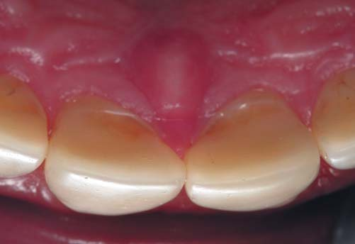
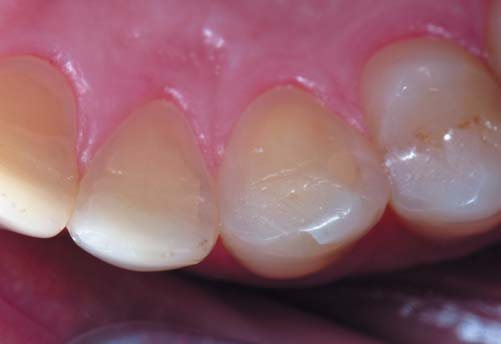
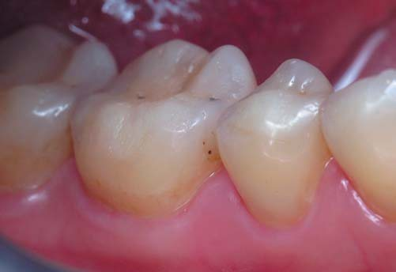
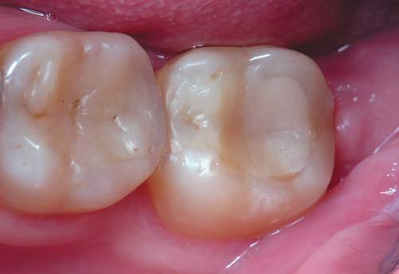
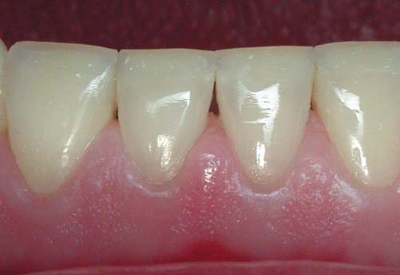
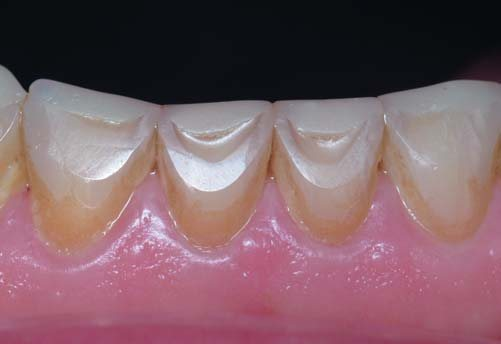
Показання до реновації реставрацій
Рішення про необхідність реновації реставрацій ми ухвалюємо за низкою ознак, що свідчать про перевантаження передніх зубів внаслідок зношування реставрованих бокових зубів:
- стирання оральної поверхні верхніх різців зі сходинкою або оголенням дентину;
- точкове оголення дентину на молярах;
- стирання опорних горбиків і, як наслідок, зниження вертикального розміру прикусу;
- стирання і руйнування ріжучих країв нижніх різців;
- стирання іклів з появою множинного контакту між верхніми і нижніми зубами в бічних позиціях оклюзії.
Реновація проводиться за сукупністю ознак, а не за термінами, тому що поява ознак пов’язана передусім з інтенсивністю зношування та циклічними навантаженнями, яких зазнають реставровані зуби. На зношуваність реставрацій впливають вираженість парафункцій/бруксизму, режим користування нічною/денною захисною капою, абразивність їжі і стійкість композиту до стирання.
У клініці ми попереджаємо пацієнтів про потенційну необхідність реновацій реставрацій через 5 років після системного відновлення зубів, сподіваючись довести термін служби реставрацій без реновації до 10 років. Однак у автора, як і в кожного стоматолога, є кілька пацієнтів – чемпіонів з бруксизму, яким доводиться робити реновацію буквально через кожні 3 роки! Щоправда, при цьому парафункції ми не вважаємо протипоказанням до реставрації, тому що без відновлення анатомічної форми зубів, прикусу, оклюзії і неможливо позбавити пацієнтів від цих же парафункцій.
Якщо реновація реставрованих зубів провадиться в межах самих реставрацій, то це вкладається в рамки вимог Парадигми адгезивної реставрації: уникати повної заміни реставрації протягом мінімум 10 років.
Клінічний приклад системної реновації реставрованих зубів
Пацієнтові на час проведення реновації виповнився 41 рік, шкідливих звичок не виявлено, але мала місце стресова професійна активність, захисною капою не користувався, рівень індивідуальної гігієни рота був задовільним. За 10 років до реновації було зроблене системне відновлення зубів через патологічне стирання. Тоді, 10 років тому, була проведена інтенсивна професійна гігієна та навчання індивідуальній гігієні зубів і ротової порожнини, зроблено ревізію фісур премолярів і третіх молярів, проведені ендодонтичне переліковування зубів 21, 26, 36, 37, заміна всіх реставрацій з порушеним крайовим приляганням і реконструкція нижніх різців композитом. Оскільки реставрація зубів робилася системно, то шляхом відновлення анатомічної форми зубів була досягнута нормалізація прикусу.
Через 10 років після системного відновлення зубів через стирання композиту з’явилися ознаки зниження вертикального розміру прикусу і функціонального перевантаження передніх зубів через зміщення нижньої щелепи вперед при зниженні висоти бічних зубів.
За сукупністю ознак і після закінчення терміну служби реставрацій було прийняте рішення (спільно з пацієнтом) про реновацію реставрацій з ревізією з’єднання реставрацій із зубними тканинами і повною заміною реставрацій у конструкції реставрованого зуба в разі виявленого дебондингу.
Стан зубів і прикусу до реставрації
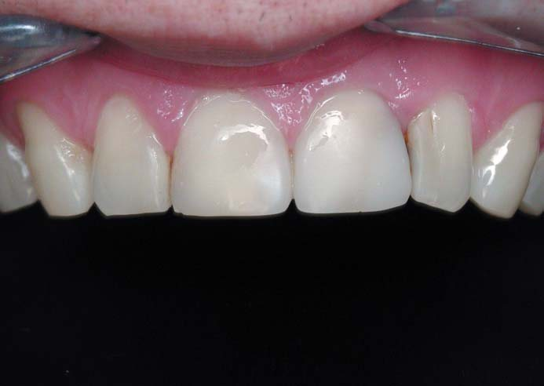
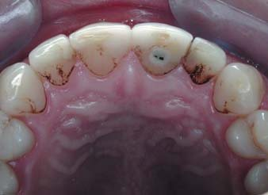
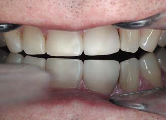
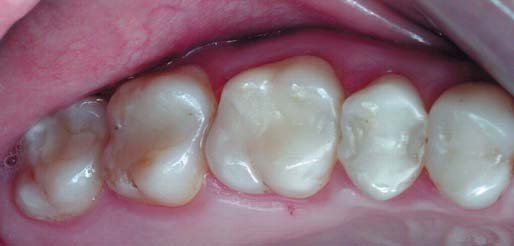
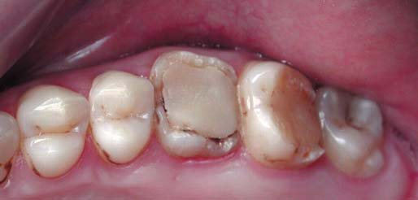
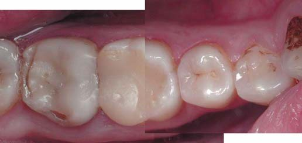
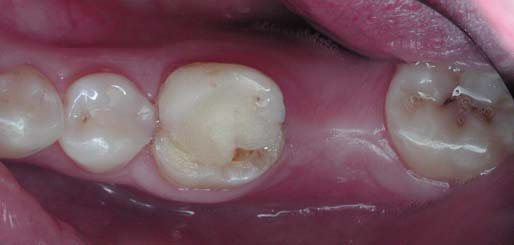
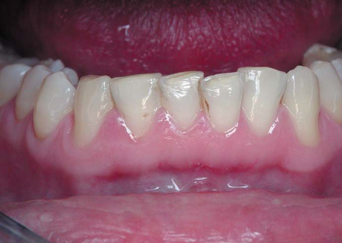
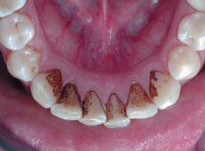
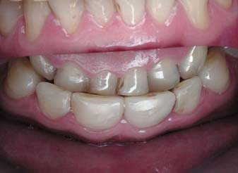
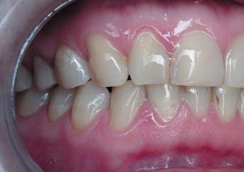
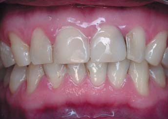
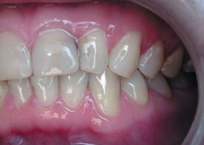
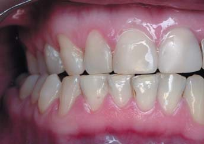
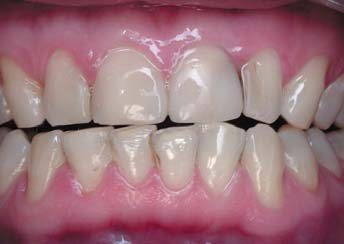
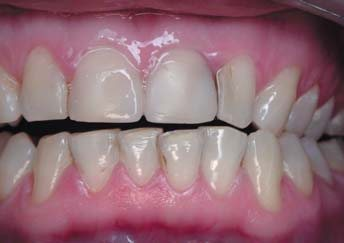
Верхні передні зуби: усі різці реставровані з гарним крайовим приляганням реставрацій, мають стерті ріжучі краї з оголеним дентином, зуб 21 девітальний, з металевим штифтом (потрібне ендодонтичне переліковування), висота і ширина коронок центральних різців однакові, реставрація на мезіальній контактній поверхні зуба 22 з навислим краєм, міжзубний сосочок запалений, горбики на іклах стерті з оголенням дентину, в оклюзійному дзеркалі, встановленому на премолярах, визначається переважне стирання зубів праворуч.
Верхні бічні зуби праворуч: усі зуби реставровані зі згладженим рельєфом жувальної поверхні, зуб 18 з добре збереженою формою жувальної поверхні і порушенням крайового прилягання реставрацій.
Верхні бічні зуби ліворуч: зуб 28 з пігментованими фісурами, зуб 27 у супраоклюзії з реставрацією класу II, яка руйнується, зуб 26 девітальний з плоскою реставрацією класу I і краями зубних тканин, що руйнуються (потрібне ендодонтичне переліковування), премоляри зі стертістю горбиків у межах емалі.
Нижні бічні зуби ліворуч: зуб 38 у конвергенції, фісури пігментовані, зуб 37 відсутній, зуб 36 відновлений великою реставрацією, яка руйнується на вестибулярних горбиках.
Нижні бічні зуби праворуч (зображення зібране в масштабі з трьох знімків зі співвідношенням 2:1): зуб 48 з пігментованими фісурами і площинами стирання на зовнішній поверхні вестибулярних горбиків, зуб 47 девітальний, краї реставрації по дистальній і вестибулярній поверхнях руйнуються, девітальний зуб 46 відновлений великою реставрацією (зуби 47 і 46 вимагають ендодонтичного переліковування), премоляри зі стертою емаллю на вестибулярних горбиках.
Нижні передні зуби: горбики на іклах стерті з точковим оголенням дентину, різці мають стерті ріжучі краї з розкриттям дентину і більш вираженим стиранням праворуч (на центральних різцях визначаються трикутні майданчики стирання, що свідчать про протрузію нижньої щелепи), зуби 41, 31 і 32 у повороті у зв’язку з нестачею місця в зубній дузі (причиною таких поворотів різців може бути функціональне перевантаження передніх зубів через зниження висоти бічних зубів), змикання з верхніми передніми зубами щільне і зі зміщенням праворуч.
Усі зуби покриті щільними пігментованими зубними відкладеннями, ясенні краї з ознаками катарального гінгівіту.
Прикус у звичному змиканні: визначається як дисгнатичний нейтральний – середня лінія нижнього зубного ряду зміщена праворуч.
Передня позиція оклюзії: обидва центральних різці в контакті, є блокуючі контакти ліворуч між верхнім іклом і нижнім першим премоляром.
Права позиція оклюзії: є множинні контакти в зоні як іклів та премолярів, так і різців.
Ліва позиція оклюзії: є множинні контакти в зоні іклів і премолярів, визначаються конгруентні майданчики стирання ріжучих країв латеральних різців.
Стан зубів і прикусу після реставрації
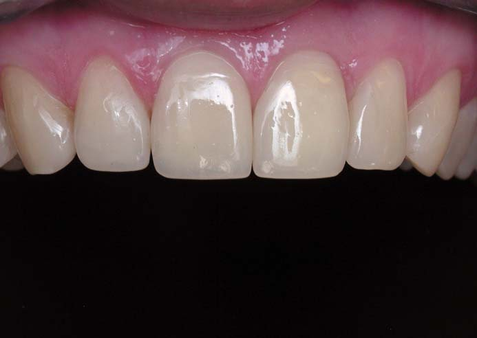
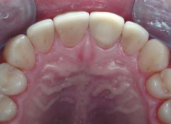
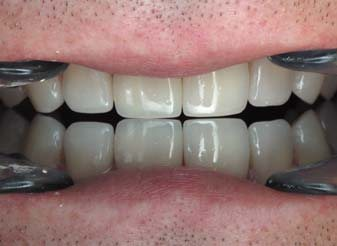
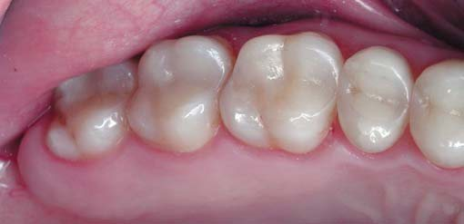
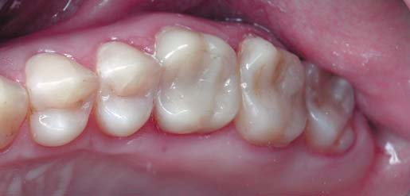
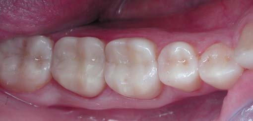

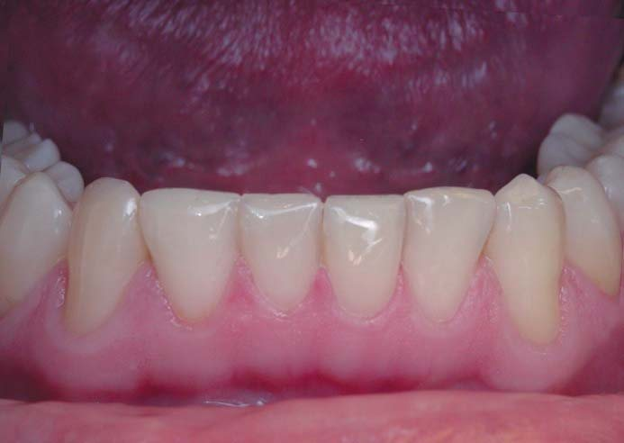
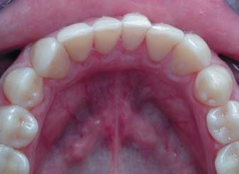
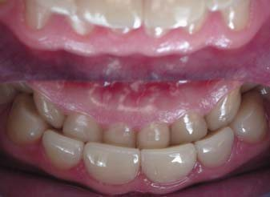
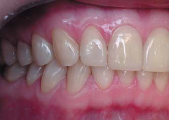
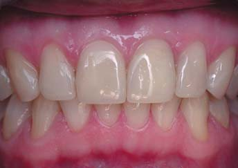
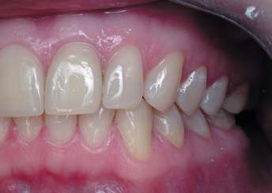
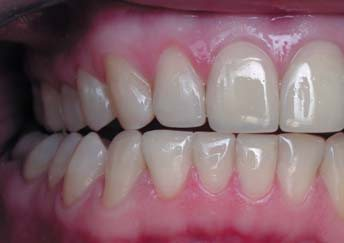
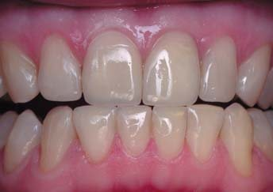
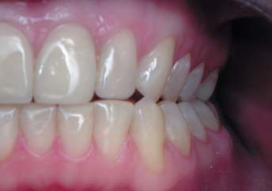
Системна реставрація зубів виконана протягом двох основних етапів, які передбачають на першому етапі відновлення всіх верхніх зубів і на другому етапі – відновлення всіх нижніх зубів. Однак у зв’язку зі збільшенням потрібного робочого часу для ендодонтичного переліковування і відновлення трьох молярів та верхнього лівого центрального різця відновлення оклюзії затягнулося, було виконане протягом 3,5 місяця і потребувало 5 приїздів у клініку (2 приїзди по два робочих дні і 3 приїзди по одному робочому дню). Тому на фото подано стан зубів і прикусу через 6 місяців після завершення системної реставрації зубів.
Верхні передні зуби: різці відновлено з акцентом центральних різців, висота коронок яких пропорційна ширині, а колір вітального зуба 11 повністю збігається з кольором девітального зуба 21. Після відновлення коректної форми зуба 22 і усунення нависання реставрації повністю відновився мезіальний міжзубний сосочок. Після 6-місячного використання ікла мають злегка стерті горбики (горизонтальне стирання праворуч і мезіальне стирання ліворуч), в оклюзійному дзеркалі видно незначний акцент зуба 11 через переважне стирання премолярів праворуч.
Бічні зуби: усі горбики мають пірамідальну форму, на жувальній поверхні всюди «читається» форма горбиків з рвучим ребром і мезіальною/дистальною гранями. Вершини опорних горбиків, що відповідають за вертикальний розмір прикусу (на верхніх зубах оральні, на нижніх зубах вестибулярні), розміщені посередині між екватором коронки і поздовжньою фісурою кожного зуба, вершини напрямних горбиків (на верхніх зубах вестибулярні, на нижніх зубах оральні), що відповідають за рух нижньої щелепи, розташовані по краях горбиків. Добре видно послідовне збільшення кутів нахилу горбиків від третіх молярів до перших премолярів, що відповідає концепції послідовної дезоклюзії. Усі ці елементи оклюзії забезпечують правильну позицію нижньої щелепи у звичному змиканні. На жувальній поверхні реставрованих зубів не видно звичну нині характеризацію фісур барвником, тому що ця техніка підкреслення форми горбиків на той час у нашій клініці не застосовувалася. І, звичайно, зуб 37 відсутній, як і раніше.
Нижні передні зуби: горбики на іклах мають незначні майданчики стирання, що відрізняються праворуч і ліворуч локалізацією, ріжучі краї різців рівні, зубна дуга правильної форми, на зубі 31, розташованому вестибулярно, на вестибулярній поверхні ріжучого краю визначається трикутна площина стирання. Змикання верхніх і нижніх різців щільне.
Прикус у звичному змиканні: визначається тепер як ортогнатичний нейтральний – середня лінія нижнього зубного ряду, як і раніше, зміщена праворуч.
Передня позиція оклюзії: обидва центральні різці в ізольованому контакті, блокуючі контакти відсутні.
Права позиція оклюзії: ікла в крайній правій позиції забезпечують повне роз’єднання зубів, блокуючих контактів немає.
Ліва позиція оклюзії: ікла у крайній лівій позиції також забезпечують повне роз’єднання зубів і відсутність блокуючих контактів.
Стан зубів і прикусу через 10 років
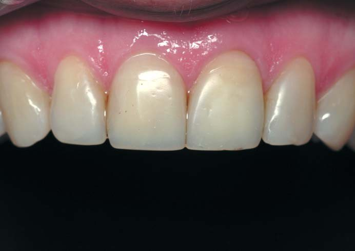
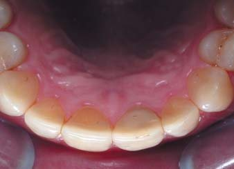
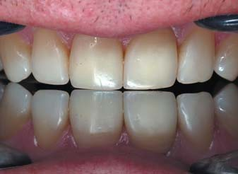
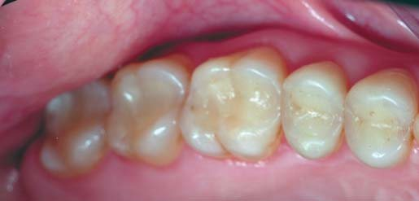
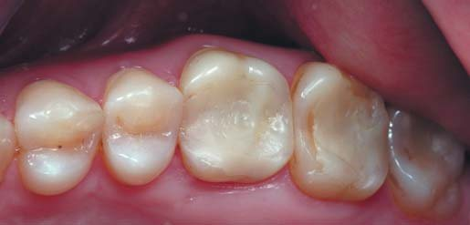
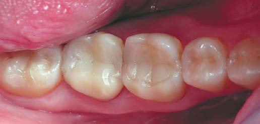
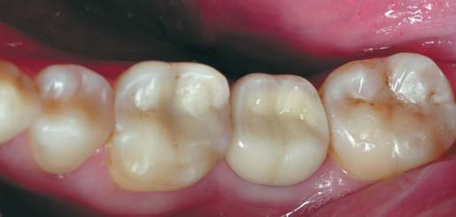
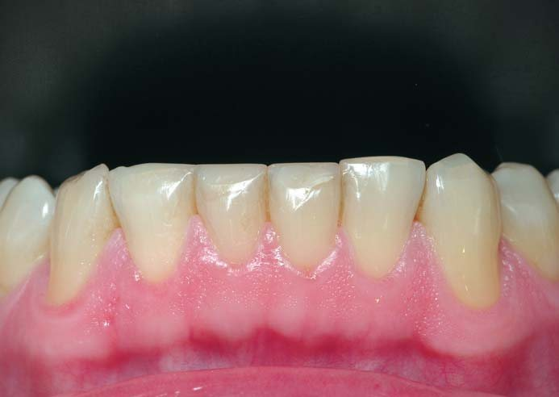
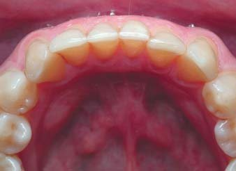
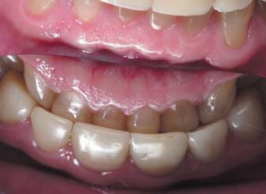
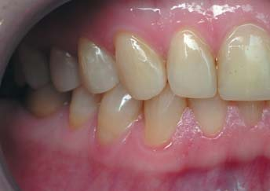
Минуло 10 років, термін служби прямих реставрацій завершився, і тепер є право на повну заміну реставрацій... Протягом цього періоду були контрольні приїзди в клініку через 3 роки у зв’язку із завершенням терміну дії гарантії (зуб 37 уже був відновлений керамічною коронкою на абатменті), через 5 років у зв’язку з поздовжнім розколом коронки девітального зуба 46 (коронка була розібрана всередині по лінії розколу, проклеєна з армуючим скловолокном і відновлена зі збереженням усіх колишніх зовнішніх стінок, і в цей же час відбулася заміна керамічної коронки зуба 37 через перелом абатмента), через 6 років (заміна передньої частини ріжучого краю зуба 31, включаючи заміну адгезивного шару на дентині), через 8 років (скол передньої частини реставрації зуба 22, заміна в межах реставрації). Якихось скарг на порушення жування і чутливість реставрованих зубів немає.
Верхні передні зуби: внаслідок стирання зменшився акцент центральних різців, хоча пропорція висоти коронок до ширини залишається прийнятною. Ріжучий край зуба 22, відкоригований 2 роки тому, знову став нерівним через контакт з нижнім іклом. Поверхня реставрацій залишається блискучою, але блиск композиту поступається блиску емалі, крайове прилягання збережене і не має оптичної межі як візуально, так і при підсвічуванні трансілюмінатором. На оральній поверхні видно невелике відшарування поверхневого шару композиту біля ріжучого краю зуба 12, товщина ріжучого краю центральних різців більша, ніж у латеральних різців, що підтверджує стирання центральних різців. У площині оклюзійного дзеркала визначається симетричне зображення з незначною втратою висоти коронок праворуч. Міжзубні сосочки повністю заповнюють міжзубні проміжки.
Бічні зуби: висота всіх напрямних горбиків збережена, висота всіх опорних горбиків знижена, особливо на перших молярах, є видимі розшарування реставрації девітального зуба 46. Скати горбиків на жувальній поверхні мають увігнуту форму, рвучі гребені згладжені. Контакти щільні, крім дистального контакту коронки зуба 37 на абатменті.
Нижні передні зуби: горбики на іклах мають значні майданчики стирання з акцентом праворуч, ріжучі краї різців рівні, хоча зубна дуга правильної форми, зуб 31 змістився більш вестибулярно. Ріжучі краї широкі, трикутні майданчики стирання визначаються на вестибулярній поверхні всіх ріжучих країв. Змикання верхніх і нижніх різців щільне, різці не співпадають по середній лінії.
Прикус: ортогнатичний нейтральний у звичному змиканні (вигляд праворуч, фронтальний і ліворуч), середня лінія нижнього зубного ряду зміщена праворуч.
Передня позиція оклюзії: у контакті тільки два центральні різці.
Права позиція оклюзії: ікла в крайній правій позиції більше не забезпечують повного роз’єднання зубів.
Ліва позиція оклюзії: ікла в крайній лівій позиції також не забезпечують повне роз’єднання зубів і відсутність блокуючих контактів.
За сукупністю ознак фронтального перевантаження внаслідок стирання бічних зубів і у зв’язку із завершенням терміну служби прийнято рішення (спільно з пацієнтом) про реновацію реставрацій.
3-крокова системна реновація верхніх зубів
Реновація усіх верхніх зубів здійснюється за таким самим алгоритмом, як і первинна реставрація зубів при патологічному стиранні (мається на увазі первинна реставрація для нашої клініки), і починається завжди з верхніх іклів.
До або після ізоляції зубного ряду рабердамом поверхню композиту, що підлягає реновації, слід очистити професійною зубною пастою, наприклад Zircate (Dentsply Sirona), і зняти поверхневий шар матеріалу, який підлягає реновації.
Стандартною лавсановою смужкою (товщина 50 мк) перевірено щільність контактних пунктів: смужка вводиться між зубами (повинна вводитися легко) і виводиться (під час виведення оцінюється зусилля, з яким контактуючі зуби утримують смужку). Зубним флосом перевірено прилягання реставрацій до зубних тканин на контактних поверхнях премолярів (затримка і розшарування флоса засвідчує наявність сходинки, яку потрібно згладити абразивною лавсановою смужкою). Усі контактні поверхні в нормі, міжзубні контакти щільні.
Препарували поверхню композиту кулястими алмазними борами звичайної зернистості (100-120 мкм, бори без позначення) або більшої зернистості (130-140 мкм, бори позначені зеленим кільцем) з використанням турбінного наконечника з підсвічуванням при інтенсивному водяному охолодженні.
Препарувальні бори зі значною зернистістю абразиву дозволяють створювати поверхню композиту з елементами механічної ретенції для адгезивного шару. Дентинний однокомпонентний адгезив XP-bond (Dentsply Sirona) спеціально призначений для лагодження реставрацій, забезпечує не меншу міцність з’єднання адгезивного шару з поверхнею старого композиту, ніж з’єднання порцій композиту за первинної побудови реставрацій.1
Спрямоване підсвічування турбінного наконечника дозволяє виявляти ділянки дебондингу, які потрібно розкрити. Під час препарування з підсвічуванням дебондинг виявляється появою вираженої оптичної межі між реставраційним матеріалом і зубними тканинами.
Інтенсивне водяне охолодження потрібне для підтримання чистоти повітря, бо під час препарування поверхні композиту утворюється значна кількість композитного пилу.
Крок 1: реновація іклів
Ікла – функціонально активні зуби, вони піддаються особливим циклічним навантаженням, тому композит на горбиках іклів стирається швидше, а трансілюмінація часто показує відрив реставрації від поверхні дентину. Праворуч і ліворуч горбики іклів були замінені повністю. Також була відкоригована форма ріжучого краю зуба 22.
Крок 2: реновація бічних зубів
Реновації підлягають стерті поверхні реставрацій, і всього їх три: зовнішня і жувальна поверхні опорних горбиків, які стираються з двох боків, і жувальна поверхня напрямних горбиків, які стираються лише з одного боку. На верхніх бічних зубах оральні/піднебінні горбики є опорними (відповідають за вертикальний розмір прикусу), а вестибулярні/щічні горбики – напрямними (відповідають за рухи нижньої щелепи).
Заміна стертої поверхні реставрацій продемонстрована на прикладі зубів правого бокового секстанта. Вершини опорних горбиків на всіх зубах секстанта стерті і тому зміщені орально, висота напрямних горбиків без змін, скати всіх горбиків на жувальній поверхні згладжені й увігнуті. Явних ознак відриву композиту від емалі немає.
Третій моляр: ізоляція рабердамом, препарування (невелике просування вглиб зроблено по мезіальному краю реставрації), адгезивна підготовка і відновлення анатомічної форми горбиків одним прозорим відтінком композиту (відтінок YE наногібридного композиту Esthet-X HD, Dentsply Sirona) з характеризацією фісур.
Перший моляр: така сама техніка і послідовність реновації, добре видно зміщення вершини мезіального орального горбика до центру жувальній поверхні – як результат відновлення його анатомічної форми.
Премоляри: у процесі препарування виявлено відшарування реставрації на напрямному горбику першого премоляра, яке виявилося неглибоким, анатомічну форму відновлено повністю.
Крок 3: реновація передніх зубів
З пацієнтом узгоджене рішення залишити ріжучі краї центральних різців без змін, оскільки у передній позиції оклюзії центральні різці зберегли ізольоване змикання і повністю роз’єднують зубні ряди.
У результаті проведеної реновації реставрованих зубів відновлено анатомічну форму та завдяки роз’єднанню на бічних зубах отримано простір для відновлення ріжучих країв нижніх зубів. Співвідношення зубних рядів по середній лінії збережено, і це свідчить про симетричність реновації форми жувальної поверхні.
Висновки
Завдяки системному відновленню зубів у прямій техніці з використанням дентинного адгезиву було відновлено початкову анатомічну форму всіх зубів, і таким чином був відновлений вертикальний розмір прикусу та оклюзії. Після закінчення терміну служби прямих реставрацій, який згідно з парадигмою адгезивної реставрації повинен становити не менше 10 років, унаслідок стирання реставраційного матеріалу, на бічних зубах передусім, відбулося зменшення вертикального розміру прикусу з формуванням перевантаження передніх зубів. На бічних зубах ділянки стирання композиту виявлялися на опорних горбиках – на жувальній і зовнішній поверхнях, на напрямних горбиках по жувальній поверхні, а також на функціонально активних зубах: усі ікла, верхні центральні різці та всі нижні різці. При цьому скарг у пацієнта не було.
На підставі ознак зниження вертикального розміру прикусу і перевантаження передніх зубів спільно з пацієнтом вирішено провести реновацію реставрованих зубів для усунення стирання композиту і відновлення початкового вертикального розміру прикусу.
Реновація реставрованих зубів робилася за тим же алгоритмом, що й первинна системна реставрація зубів. Протягом однієї реставраційної сесії, орієнтуючись на нормальну анатомічну форму коронок, було реставровано всі верхні зуби: спочатку ікла, потім бічні зуби праворуч і ліворуч і, на завершення, різці. У результаті реновації отримані множинні контакти верхніх і нижніх бічних зубів, а також незначний простір для завершального відновлення ріжучих країв нижніх різців. За збігом верхніх і нижніх різців по середній лінії контролювався баланс оклюзії по горизонталі.
Перша реакція пацієнта на результати реновації верхніх зубів була дещо несподіваною: «І навіщо ми це зробили, мені було так добре ...» Справді, потреба реставрованих зубів у реновації є неусвідомленою, адже скарг жодних не було і функція жування була цілком повноцінною. Однак ознаки зниження вертикального розміру прикусу і, як наслідок, перевантаження передніх зубів, виявлені при оцінці стану реставрованих зубів і прикусу після закінчення терміну служби реставрацій, вочевидь свідчили про проблеми в недалекому майбутньому, і рішення про проведення реновації стоматолог і пацієнт ухвалювали спільно.
Період адаптації до вертикального розміру прикусу, який відновлюється, перед 3-кроковою реновацією нижніх зубів має становити близько місяця, але не більше одного року (за нашим досвідом). Відновленням анатомічної форми нижніх зубів буде завершено реставрацію всіх зубів і прикусу за 6 кроків, і якщо на виконаних перших трьох кроках головна увага в оклюзії зверталася лише на симетричність прикусу, то після реновації нижніх зубів, яка була призначена через 6 тижнів, вся увага буде сконцентрована на отриманні коректних рухів нижньої щелепи в оновленому вертикальному розмірі прикусу.
У другій частині цієї статті буде описано 3-крокову реновацію всіх нижніх реставрованих зубів, прийоми і послідовність інтеграції зубів в оклюзії і показано стан реставрованих зубів через 3 роки після реновації (3 роки – це встановлений у клініці гарантійний період).
Далі буде…
Література
- Грютцнер А. ИксПи Бонд Универсальная адгезивная система для техники тотального протравливания // ДентАрт. – 2007. – №2. – С. 49-57.
- Дичи Д. Беспрепаровочная превентивная реабилитация зубов при стираемости в свободной технике по восковой модели // ДентАрт. – 2019. – №1. – С. 5-15.
- Радлинский С. Системное восстановление высоты всех зубов при повышенной стираемости // ДентАрт. – 2007. – №3. – С. 38-48.
- Радлинский С. Прямая реставрация зубов на абатменте // ДентАрт. – 2016. – №4. – С. 4-13.
- Радлинский С. Синхромиография в системном восстановлении окклюзии // ДентАрт. – 2018. – №2. – С. 35-54.
- Dietschi D. Optimizing Smile Composition and Esthetics with Resin Composites and Other Conservative Esthetic Procedures // EJEDE. – 2008. – Vol 3. – N 1. – P. 274-289.
- Dietschi D. A Comprehensive and Conservative Approach for the Restoration of Abrasion and Erosion. Part I: Concepts and Clinical Rationale for Early Intervention Using Adhesive Techniques // EJEDE. – 2011. – Vol 6. – N 1. – P. 2-15.
- Dietschi D. A Comprehensive and Conservative Approach for the Restoration of Abrasion and Erosion. Part II: Clinical Procedures and Case Report // EJEDE. – 2011. – Vol 6. – N 2. – P. 142-159.
- Robertson T.N., Heymann H.O., Swift E.J. Sturdevant’s Art & Science of Operative Dentistry. – St. Louis: Mosby, 2003. – P. 140-148.